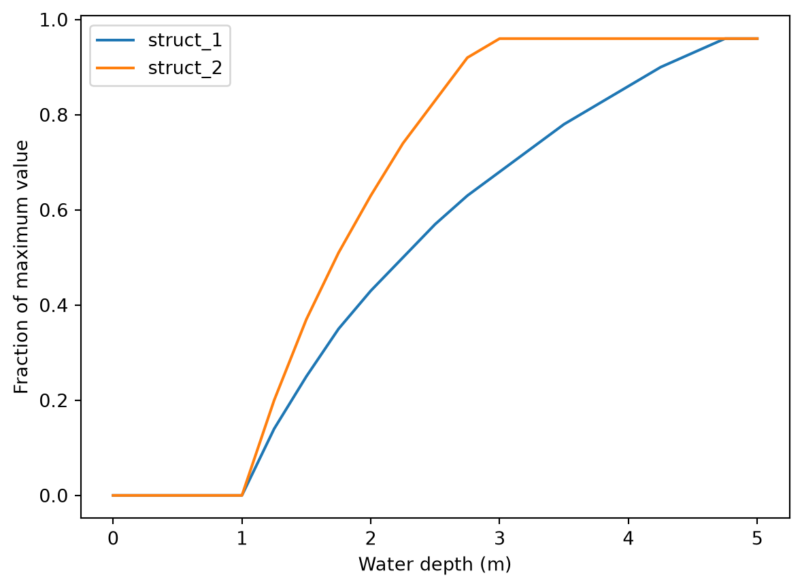

Vulnerability data
The vulnerability of an asset is determined by its building type (e.g. ‘residential 1-story building’) and the inundation depth, also refered to as water depth, during a flood event. Different assests incur different degrees of damage at varying inundation levels. This vulnerability can be quantified via flood depth-damage functions, see for example Figure 1. The vulnerability curve relates the water depth to the maximum value per asset and returns the damage fraction (a value between 0 and 1). The damage fraction is multiplied by the maximum value to obtain a damage value. The value of the maximum value differs per asset and must be specified in the exposure data.
Vulnerability file
The vulnerability curves must be given in a single NetCDF file, which is set via file under the [vulnerability] section of the settings file. It is recommended to place it in the vulnerability directory.
Important
The CSV vulnerability format (a water depth column followed by curve columns with #UNIT and #METHOD header rows) is no longer supported. Convert the curves to a NetCDF vulnerability dataset as described below.
The file can hold one or more vulnerability datasets. A vulnerability dataset is a NetCDF variable (named freely, e.g. default) that holds the damage fractions (values between 0 and 1) of a set of curves. A dataset <name> has:
- One curve dimension, named
curve_<name>. Its coordinate holds the curve ids (strings or integers). These are the ids the exposure data refers to (thefn_<type>_<component>columns of geometry exposure, thefn_curveof a grid exposure layer or the categories of a categorized grid layer). - One or more index dimensions, e.g.
depth_<name>andduration_<name>. Their coordinates hold the hazard values (e.g. water depth) and must be strictly increasing. Each index dimension has a hazard type (e.g.water_depthorflood_duration), set withtypesin the settings file. The order of the index dimensions in the file is free; the axes are matched to the method by their type. - A method, naming the calculation method of the dataset (e.g.
flood.depth, see Methods), set withmethodin the settings file.
A dataset with one index dimension holds 1D curves (e.g. depth-damage curves), a dataset with two index dimensions holds 2D curves (e.g. depth-duration-damage curves). An example of a file with a single 1D dataset:
dimensions:
depth_default = 21 ;
curve_default = 2 ;
variables:
float depth_default(depth_default) ;
depth_default:type = "water_depth" ;
string curve_default(curve_default) ;
float default(depth_default, curve_default) ;
default:method = "flood.depth" ;
data:
curve_default = "struct_1", "struct_2" ;The curves are interpolated linearly (1D) or multilinearly (2D or more) between the given hazard values. Hazard values outside of the range of an index dimension get the value at the nearest end of that dimension (no extrapolation). A missing hazard value (nodata) gives a missing impact.
Water depths may be negative for assets that incur damage below the ground floor height, and the user is free to choose any water depth increments.
Important
Water depth units (e.g. feet or meters) must be consistent with the units of the flood hazard map and the exposure data (i.e., ground elevation, ground floor height).
Note
The aggregation of multiple hazard values per asset (formerly the #METHOD header row of the CSV file) is set per geometry file with zonal_method in its [exposure.variables] table, see the settings.
Methods
The method of a dataset determines which hazard types it needs and how the impact is calculated. The global method setting no longer exists; every dataset carries its own method. The following methods are available:
| Method | Datasets per call | Hazard types (bands) | Curve axis types | Impact | Model |
|---|---|---|---|---|---|
flood.depth |
1 (1D) | water_depth | water_depth | \(f(d) \cdot E \cdot r\) | geom, grid |
flood.level |
1 (1D) | water_level | water_depth | \(f(d) \cdot E \cdot r\) | geom |
flood.depth_duration |
2 (1D each) | water_depth, flood_duration | water_depth, flood_duration | \(f_1(d) \cdot f_2(t) \cdot E \cdot r\) | grid |
flood.depth_duration_2d |
1 (2D) | water_depth, flood_duration | water_depth, flood_duration | \(f(d, t) \cdot E \cdot r\) | geom, grid |
Here \(d\) is the water depth, \(t\) the flood duration, \(E\) the maximum value of the exposure and \(r\) the reduction factor of the area method (1 for grid cells).
flood.depth: the hazard is a water depth. For geometries the depth relative to the object is the hazard value minus theelevationcolumn.flood.level: the hazard is a water level; for geometries it is converted to a water depth with thereferenceandelevationcolumns. Because grid calculations do not convert the hazard, this method can only be used with geometry exposure; linking it to a grid layer gives an error.flood.depth_duration: combines two 1D datasets in one calculation, one with awater_depthaxis and one with aflood_durationaxis (e.g. a direct and an indirect damage dataset). Both datasets have this method and are linked to the same grid layer, see linking. As a geometry file is linked to a single dataset, this method is only available for grid exposure.flood.depth_duration_2d: one dataset with 2D curves (water depth by flood duration). For geometries the duration is reduced over the wet part (depth > 0) of the asset.
The hazard file must hold a band of every hazard type that the methods of the linked datasets need, see hazard data.
Settings
The datasets that are used, their method and the types of their axes are set in the settings file with a [[vulnerability.variables]] entry per dataset. Attributes in the file (e.g. method or type) are not read, and datasets of the file without a [[vulnerability.variables]] entry are ignored. A dataset without a method or with an axis without a type gives an error.
[vulnerability]
file = "curves_multi.nc"
[[vulnerability.variables]]
name = "direct"
method = "flood.depth_duration"
types = { depth_direct = "water_depth" }
[[vulnerability.variables]]
name = "indirect"
method = "flood.depth_duration"
types = { days_indirect = "flood_duration" }name: the name of the dataset (variable); it must exist in the file.method: the calculation method of the dataset (required).types: the hazard type per index dimension (required); the keys must be the index dimensions of the dataset, each one needs a type.
Note
Vulnerability datasets can not be defined by a constant value (as hazard and grid exposure layers can).
Linking exposure to datasets
Only the datasets linked to the exposure data are used.
- Geometry exposure: each
[[exposure]]entry (geometry file) is linked to exactly one dataset via thevulnerabilityentry of its[exposure.variables]table (a single name, required). The dataset may hold 1D or 2D curves. Multiple 1D curves per asset remain handled by thefn_<type>_<component>columns. - Grid exposure: every layer has its own link via the required
vulnerabilityentry of its[[exposure.variables]]entry (for a categorized layer: of its category-value variables). Grid links may be a single name or a list of names.
[exposure]
file = "exposure/spatial.nc"
[[exposure.variables]]
name = "exposure2"
type = "default"
fn_curve = "struct_2"
vulnerability = ["direct", "indirect"]For a grid layer linked to several datasets, the datasets that share a method combining multiple datasets (e.g. flood.depth_duration) form one calculation with one output; their axis types must be different and together match the method. Every other dataset is a separate calculation with its own output. All outputs of a layer are added to the total. This allows for:
- A single 1D dataset (e.g.
flood.depth); - Combined 1D datasets, e.g.
["direct", "indirect"]withflood.depth_duration, giving one output; - Separate 1D datasets, e.g.
["default", "other"]withflood.depth, giving one output each; - A single dataset with nD curves (e.g.
flood.depth_duration_2d).
A grid layer has a single curve id (fn_curve) that is looked up in every linked dataset. A categorized grid layer uses its categories (integers) as curve ids in every linked dataset. A curve id or category that is not found in a linked dataset gives an error. See grid exposure for more information.
Tip
You can also create vulnerability curves with the HydroMT-FIAT model builder